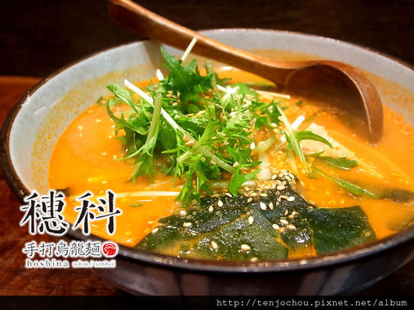
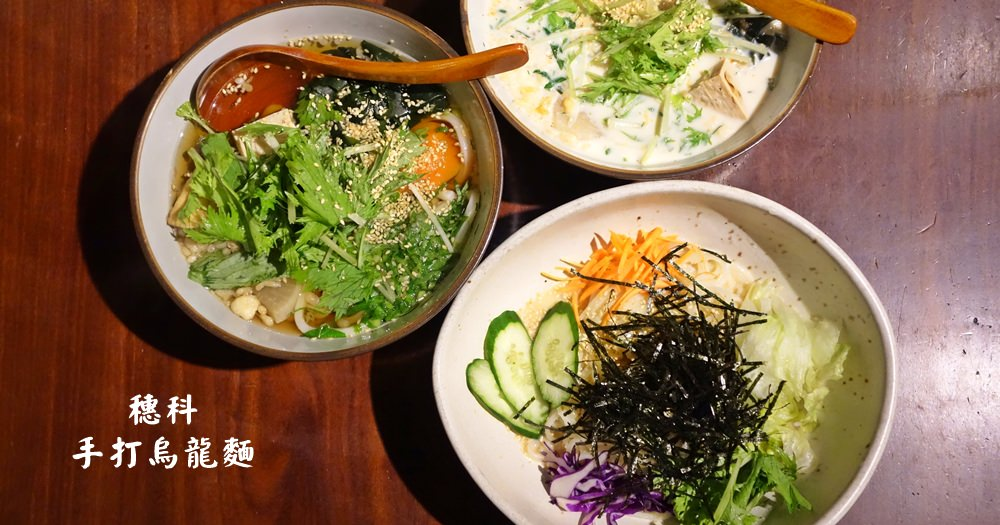

台北穗科烏龍麵-復北店
台北穗科烏龍麵-復北店.台北穗科烏龍麵-忠孝店
品牌故事
台灣職人的感動傳承日本製麵達人的台灣起點日本糠信和広師傅傳習製麵技藝多年，
將博大精深的料理道，化為一碗清秀單純的烏龍麵。
箇中清雅之淡然真味淋漓發揮，廣受業界推崇。
糠信師傅最大的願望，即是讓更多人吃到更好吃的烏龍麵。
懷著這樣的心情，他對第一位，也是唯一台灣傳人，一位來自台中的師傅傾囊相授，
並支持學成歸國的師傅，續以『穗科』為名，在台開業，讓手打烏龍麵的感動，從這裡開始擴散。
對於曾經在那工作過的我十分佩服這間店對於食材的用心與付出
也很努力地把素食做到人人吃過都會想再回來吃


連到第二頁
連到第三頁
連到第四頁
連到第五頁